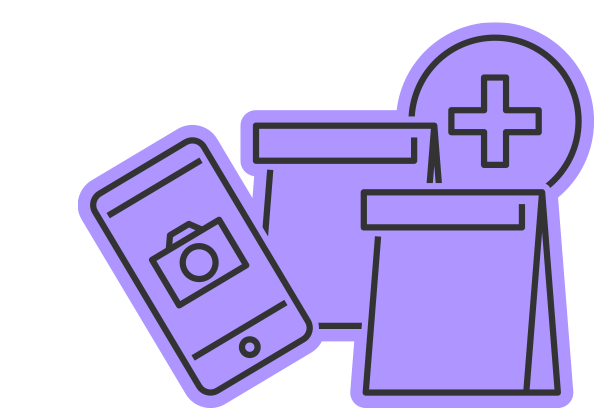

성폭력 이후 최대한 빨리 사건에 대해 기록해둡니다. 구체적인 장소,
시간, 날짜, 목격자나 증인, 자신이 대응했던 방법, 가해자의 태도,
이에 대한 느낌 등을 자세히 적습니다. 이것 자체로 증거가 될 수
있으며, 조사 시에도 도움이 됩니다.
사건을 직접 목격한 사람, 사건 이후에 가해자 또는 피해자에게 사건
내용을 들은 사람을 증인으로 확보합니다. 사건에 대해 친구나
가족에게 보낸 문자메시지/메신저 내용도 증거가 됩니다.
• 성폭력과 관련한 컴퓨터 화면 캡쳐, 스마트폰 화면 캡쳐,
문자메시지나 이메일 내용, SNS 내용, 녹음/녹화 파일, CCTV 화면 등을
증거로 사용할 수 있습니다.
• 성폭력으로 인해 심리상담/성폭력
상담을 받았다면 이를 증거로 사용할 수 있습니다.
강간, 강제추행 등
신체적 성폭력의 경우

• 의학적 증거는 72시간 내에 진찰을 받아야 확보할 수 있으므로 몸을
씻지 않은 상태에서 가능한 빨리 해바라기센터로 가야 합니다. 이때는
성폭력 피해 당시 입은 옷 그대로 가거나 갈아입더라도 함께 가져가는
* 의료비 지원 가능
• 몸에 상처가 남았거나 멍이 들었다면
이를 사진으로 촬영하고 병원에 가서 진단서를 받습니다.
• 피해
장소에는 가해자 신체의 일부(지문, 모발, 땀 등)나 가해자의
물건(흉기, 명함, 사진 등)이 남아 있을 수 있으므로 가능한 그대로
보존하는 것이 필요합니다. 보존하기 어려운 경우에는 사진촬영을
해두는 것이 좋습니다.